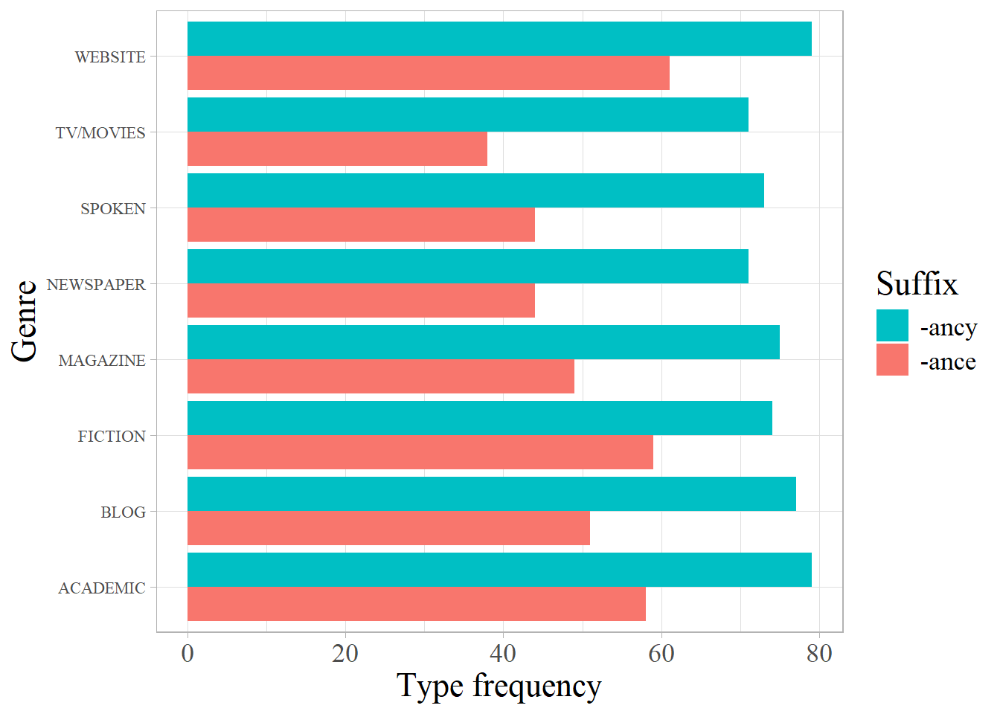

── Attaching core tidyverse packages ──────────────────────── tidyverse 2.0.0 ──
✔ dplyr 1.1.4 ✔ readr 2.1.5
✔ forcats 1.0.0 ✔ stringr 1.5.1
✔ ggplot2 3.5.1 ✔ tibble 3.2.1
✔ lubridate 1.9.4 ✔ tidyr 1.3.1
✔ purrr 1.0.4
── Conflicts ────────────────────────────────────────── tidyverse_conflicts() ──
✖ dplyr::filter() masks stats::filter()
✖ dplyr::lag() masks stats::lag()
ℹ Use the conflicted package (<http://conflicted.r-lib.org/>) to force all conflicts to become errors
Attaching package: 'googledrive'
The following objects are masked from 'package:googlesheets4':
request_generate, request_makeR notebook for the corpus-based study of English suffixes -ance and -ancy
Gede Primahadi Wijaya Rajeg ![]()
I Made Netra
# df <- read_sheet(ss = datasheet) <- run this regularly to check update
# write_rds(df, "data-raw/ance-ancy.rds")
df <- read_rds("data-raw/ance-ancy.rds")
unanalysed <- read_tsv("data-raw/unanalysed.csv") |>
mutate(SUFFIX = replace_na(SUFFIX, ""))Rows: 279 Columns: 5
── Column specification ────────────────────────────────────────────────────────
Delimiter: "\t"
chr (5): FORM, ROOT, SUFFIX, ETYMOLOGY, REMARK
ℹ Use `spec()` to retrieve the full column specification for this data.
ℹ Specify the column types or set `show_col_types = FALSE` to quiet this message.unanalysed1 <- unanalysed |>
filter(!is.na(ROOT), SUFFIX != "-mancy") |>
filter(FORM != "CIRCUMSTANCE") |> # historical relation with circum + stance
mutate(SUFFIX = replace(SUFFIX, SUFFIX == "", "ancy")) |>
select(FORM, ROOT_new = ROOT, SUFFIX_new = SUFFIX, ETYMOLOGY_new = ETYMOLOGY)# df_combined <- df |>
# left_join(unanalysed1,
# by = join_by(FORM))|>
# mutate(ROOT = if_else(!is.na(ROOT_new),
# ROOT_new,
# ROOT),
# ETYMOLOGY = if_else(!is.na(ETYMOLOGY_new),
# ETYMOLOGY_new,
# ETYMOLOGY),
# SUFFIX = if_else(!is.na(SUFFIX_new),
# SUFFIX_new,
# SUFFIX)) |>
# select(!matches("_new"))
df_combined <- dfTry the current analysed data
df_ok <- filter(df_combined, !is.na(ROOT))
# df_ok <- filter(df, !is.na(ROOT))
df_ok |> slice_sample(n = 10)# A tibble: 10 × 7
ID FORM FREQ GENRE SUFFIX ROOT ETYMOLOGY
<dbl> <chr> <dbl> <chr> <chr> <chr> <chr>
1 82 UTTERANCE 227 WEBSITE ance utter utterance is formed withi…
2 72 REMEMBRANCE 111 TV/MOVIES ance remember remembrance is of multipl…
3 35 VAGRANCY 13 BLOG ancy vagrant vagrancy is formed within…
4 58 RELUCTANCE 382 BLOG ance reluctant reluctance is formed with…
5 15 MAINTENANCE 3020 NEWSPAPER ance maintain maintenance is a borrowin…
6 47 RADIANCY 2 TV/MOVIES ancy radiant radiance is formed within…
7 63 APPLIANCE 329 NEWSPAPER ance apply appliance is formed withi…
8 63 SEVERANCE 155 TV/MOVIES ance severance severance is a borrowing …
9 39 DEPENDANCY 9 WEBSITE ancy dependent dependancy is formed with…
10 98 CONVEYANCE 182 ACADEMIC ance convey conveyance is formed with…Run productivity analysis per suffix.
# drive_create("productivity-by-affix",
# path = as_id("1e_0dwXEH_qTTzUdDGNxI_LHQSFIS98qj"),
# type = "spreadsheet")
# Created Drive file:
# • productivity-by-affix <id: 1g9fw5PVUrSiR9TGA9tQlOBPektaZJaVMqBK7_wwAIOs>
# With MIME type:
# • application/vnd.google-apps.spreadsheet
prod_by_affix <- df_ok |>
# remove GENRE to re-calculate frequency of suffixes and their hapax
select(-GENRE) |>
# to sum token frequency
group_by(FORM, SUFFIX, ROOT) |>
summarise(n_token = sum(FREQ), .groups = "drop") |>
# determine the hapax
mutate(is_hapax = if_else(n_token == 1, TRUE, FALSE)) |>
# to run productivity analysis
group_by(SUFFIX) |>
summarise(n_type = n_distinct(FORM),
n_token = sum(n_token),
n_hapax = sum(is_hapax),
hapax_per_token_ratio = n_hapax/n_token)
prod_by_affix |>
knitr::kable(col.names = c("Suffix", "Type Freq.", "Token Freq.", "No. Hapax", "Hapax per Token Ratio"))| Suffix | Type Freq. | Token Freq. | No. Hapax | Hapax per Token Ratio |
|---|---|---|---|---|
| ance | 97 | 823125 | 0 | 0.0000000 |
| ancy | 103 | 48601 | 11 | 0.0002263 |
# prod_by_affix |>
# rename(Suffix = SUFFIX,
# `Type Freq.` = n_type,
# `Token Freq.` = n_token,
# `No. of Hapax` = n_hapax,
# `Hapax per token ratio` = hapax_per_token_ratio) |>
# write_sheet(ss = "1g9fw5PVUrSiR9TGA9tQlOBPektaZJaVMqBK7_wwAIOs",
# sheet = "Sheet1")
write_tsv(prod_by_affix, file = "data-out/productivity_overall_by_affix.tsv")Run productivity analysis by genres.
ance <- df_ok |>
filter(SUFFIX == "ance")
ance_word_freq <- ance |>
group_by(FORM) |>
summarise(FREQ = sum(FREQ))
ancy <- df_ok |>
filter(SUFFIX == "ancy")
ancy_word_freq <- ancy |>
group_by(FORM) |>
summarise(FREQ = sum(FREQ))
ance_prod <- ance |>
group_by(GENRE) |>
# determine the hapax in a given genre
mutate(is_hapax = if_else(FREQ == 1, TRUE, FALSE)) |>
summarise(n_type = n_distinct(FORM),
n_token = sum(FREQ),
n_hapax = sum(is_hapax)) |>
ungroup() |>
mutate(suffix = "ancy")
ancy_prod <- ancy |>
group_by(GENRE) |>
# determine the hapax in a given genre
mutate(is_hapax = if_else(FREQ == 1, TRUE, FALSE)) |>
summarise(n_type = n_distinct(FORM),
n_token = sum(FREQ),
n_hapax = sum(is_hapax)) |>
ungroup() |>
mutate(suffix = "ance")
genre_prod <- bind_rows(ance_prod, ancy_prod)genre_prod |>
mutate(suffix = str_c("-", suffix, sep = "")) |>
ggplot(aes(x = GENRE, y = n_type, fill = suffix)) +
geom_col(position = position_dodge(width = .9)) +
coord_flip() +
theme_light(base_family = "serif") +
labs(y = "Type frequency",
fill = "Suffix",
x = "Genre") +
theme(legend.text = element_text(size = 13),
legend.title = element_text(size = 17),
axis.title.y = element_text(size = 17),
axis.title.x = element_text(size = 17),
axis.text.x = element_text(size = 13)) +
scale_fill_discrete(breaks = c("-ancy", "-ance"))
# ggsave("figures/prod-by-genre.png", width = 6.5, height = 4.5, dpi = 300,
# units = "in")
# googledrive::drive_upload("figures/prod-by-genre.png",
# path = as_id("18ppX_-Nr-dI-iQojYC5WHpGZi_dKojhA"),
# name = "productivity-by-genre.png")

Check the shared and distinct bases. This is operationalised via stripping off the -ance and -ancy strings from the FORM column.
ance_form <- ance_word_freq |>
mutate(BASE = str_replace(FORM, "ANCE$", ""),
suffix = "ance")
ancy_form <- ancy_word_freq |>
mutate(BASE = str_replace(FORM, "ANCY$", ""),
suffix = "ancy")
all_ance_ancy <- bind_rows(ance_form, ancy_form)
all_bases <- unique(c(ance_form$BASE, ancy_form$BASE))
shared_ance_ancy <- intersect(ance_form$BASE, ancy_form$BASE)
shared_ance_ancy_prop <- round((length(shared_ance_ancy)/length(all_bases)) * 100, 2)
only_ance <- setdiff(ance_form$BASE, ancy_form$BASE)
only_ance_prop <- round((length(only_ance)/length(all_bases)) * 100, 2)
only_ancy <- setdiff(ancy_form$BASE, ance_form$BASE)
only_ancy_prop <- round((length(only_ancy)/length(all_bases)) * 100, 2)Out of the total 183 bases, only 9.29% (i.e., 17 bases) are shared (i.e., appear with -ance and -ancy) but the frequency of occurrence of these shared bases with the suffixes are not equal.
all_ance_ancy_tb <- all_ance_ancy |>
filter(BASE %in% shared_ance_ancy) |>
select(-FORM) |>
pivot_wider(names_from = "suffix", values_from = "FREQ") |>
mutate(BASE = str_c(BASE, "ANC(E/Y)", sep = "")) |>
arrange(desc(ancy))
write_tsv(all_ance_ancy_tb, "data-out/all_ance_ancy_tb.tsv")
all_ance_ancy_tb |>
arrange(BASE) |>
knitr::kable()| BASE | ance | ancy |
|---|---|---|
| ARROGANC(E/Y) | 5049 | 5 |
| BRILLIANC(E/Y) | 3203 | 86 |
| COMPLIANC(E/Y) | 12987 | 9 |
| CONSTANC(E/Y) | 1974 | 594 |
| CONTINUANC(E/Y) | 805 | 6 |
| DEVIANC(E/Y) | 323 | 112 |
| EXTRAVAGANC(E/Y) | 458 | 2 |
| FRAGRANC(E/Y) | 3055 | 3 |
| IGNORANC(E/Y) | 13310 | 1 |
| IRRELEVANC(E/Y) | 624 | 171 |
| PREDOMINANC(E/Y) | 417 | 2 |
| RADIANC(E/Y) | 1075 | 2 |
| RELEVANC(E/Y) | 8094 | 589 |
| RELUCTANC(E/Y) | 4560 | 3 |
| RESISTANC(E/Y) | 32578 | 1 |
| RESONANC(E/Y) | 3919 | 3 |
| SIGNIFICANC(E/Y) | 21828 | 6 |
Binomial test
all_ance_ancy_tb_binom <- all_ance_ancy_tb |>
mutate(binom = map2(ance,
ancy,
~binom.test(.x,
sum(c(.x, .y)),
.5))) |>
mutate(binom = map(binom, ~tidy(.))) |>
unnest_wider(binom) |>
mutate(p_holm = p.adjust(p.value, method = "holm")) |>
arrange(BASE) |>
mutate(across(matches("(^estimate|^conf)"), ~round(., digits = 4)))
all_ance_ancy_tb_binom |>
knitr::kable(caption = "Binomial tests for base distribution between -*ance* and -*ancy*")| BASE | ance | ancy | estimate | statistic | p.value | parameter | conf.low | conf.high | method | alternative | p_holm |
|---|---|---|---|---|---|---|---|---|---|---|---|
| ARROGANC(E/Y) | 5049 | 5 | 0.9990 | 5049 | 0 | 5054 | 0.9977 | 0.9997 | Exact binomial test | two.sided | 0 |
| BRILLIANC(E/Y) | 3203 | 86 | 0.9739 | 3203 | 0 | 3289 | 0.9678 | 0.9790 | Exact binomial test | two.sided | 0 |
| COMPLIANC(E/Y) | 12987 | 9 | 0.9993 | 12987 | 0 | 12996 | 0.9987 | 0.9997 | Exact binomial test | two.sided | 0 |
| CONSTANC(E/Y) | 1974 | 594 | 0.7687 | 1974 | 0 | 2568 | 0.7519 | 0.7849 | Exact binomial test | two.sided | 0 |
| CONTINUANC(E/Y) | 805 | 6 | 0.9926 | 805 | 0 | 811 | 0.9840 | 0.9973 | Exact binomial test | two.sided | 0 |
| DEVIANC(E/Y) | 323 | 112 | 0.7425 | 323 | 0 | 435 | 0.6987 | 0.7830 | Exact binomial test | two.sided | 0 |
| EXTRAVAGANC(E/Y) | 458 | 2 | 0.9957 | 458 | 0 | 460 | 0.9844 | 0.9995 | Exact binomial test | two.sided | 0 |
| FRAGRANC(E/Y) | 3055 | 3 | 0.9990 | 3055 | 0 | 3058 | 0.9971 | 0.9998 | Exact binomial test | two.sided | 0 |
| IGNORANC(E/Y) | 13310 | 1 | 0.9999 | 13310 | 0 | 13311 | 0.9996 | 1.0000 | Exact binomial test | two.sided | 0 |
| IRRELEVANC(E/Y) | 624 | 171 | 0.7849 | 624 | 0 | 795 | 0.7547 | 0.8130 | Exact binomial test | two.sided | 0 |
| PREDOMINANC(E/Y) | 417 | 2 | 0.9952 | 417 | 0 | 419 | 0.9829 | 0.9994 | Exact binomial test | two.sided | 0 |
| RADIANC(E/Y) | 1075 | 2 | 0.9981 | 1075 | 0 | 1077 | 0.9933 | 0.9998 | Exact binomial test | two.sided | 0 |
| RELEVANC(E/Y) | 8094 | 589 | 0.9322 | 8094 | 0 | 8683 | 0.9267 | 0.9374 | Exact binomial test | two.sided | 0 |
| RELUCTANC(E/Y) | 4560 | 3 | 0.9993 | 4560 | 0 | 4563 | 0.9981 | 0.9999 | Exact binomial test | two.sided | 0 |
| RESISTANC(E/Y) | 32578 | 1 | 1.0000 | 32578 | 0 | 32579 | 0.9998 | 1.0000 | Exact binomial test | two.sided | 0 |
| RESONANC(E/Y) | 3919 | 3 | 0.9992 | 3919 | 0 | 3922 | 0.9978 | 0.9998 | Exact binomial test | two.sided | 0 |
| SIGNIFICANC(E/Y) | 21828 | 6 | 0.9997 | 21828 | 0 | 21834 | 0.9994 | 0.9999 | Exact binomial test | two.sided | 0 |
write_tsv(all_ance_ancy_tb_binom, file = "data-out/interchangeable-binom-test.tsv")Reuse
Citation
BibTeX citation:
@software{budiani2025,
author = {Budiani, Ni Ketut and Rajeg, Gede Primahadi Wijaya and
Netra, I Made},
title = {R Notebook for the Corpus-Based Study of {English} Suffixes
-\emph{Ance} and -\emph{Ancy}},
date = {2025-03-18},
url = {https://complexico.github.io/ance-ancy-suffix/},
doi = {10.17605/OSF.IO/7YJ49},
langid = {en}
}
For attribution, please cite this work as:
Budiani, Ni Ketut, Gede Primahadi Wijaya Rajeg, and I Made Netra. 2025.
“R Notebook for the Corpus-Based Study of English Suffixes
-Ance and -Ancy.” https://doi.org/10.17605/OSF.IO/7YJ49.